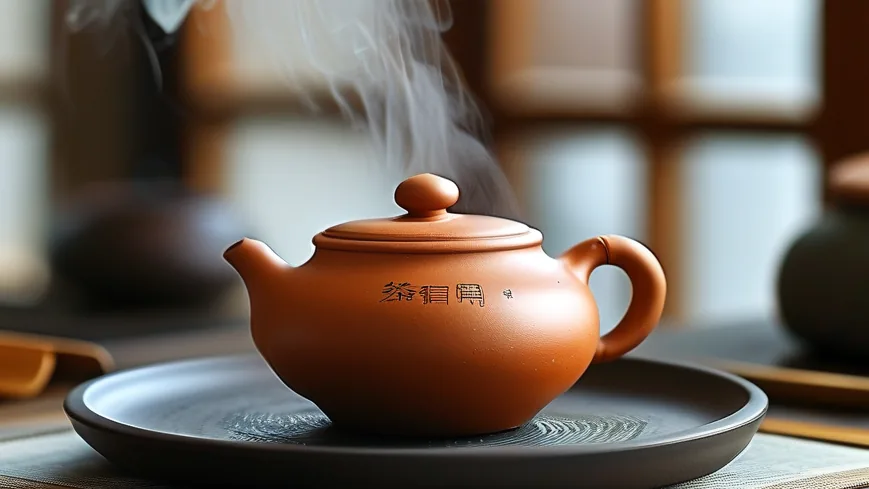
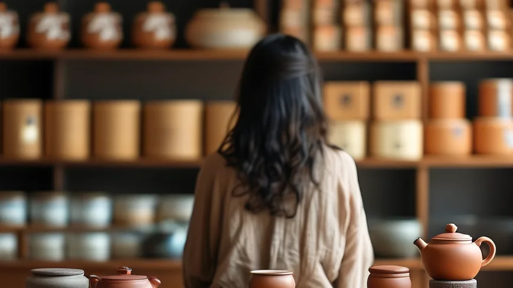
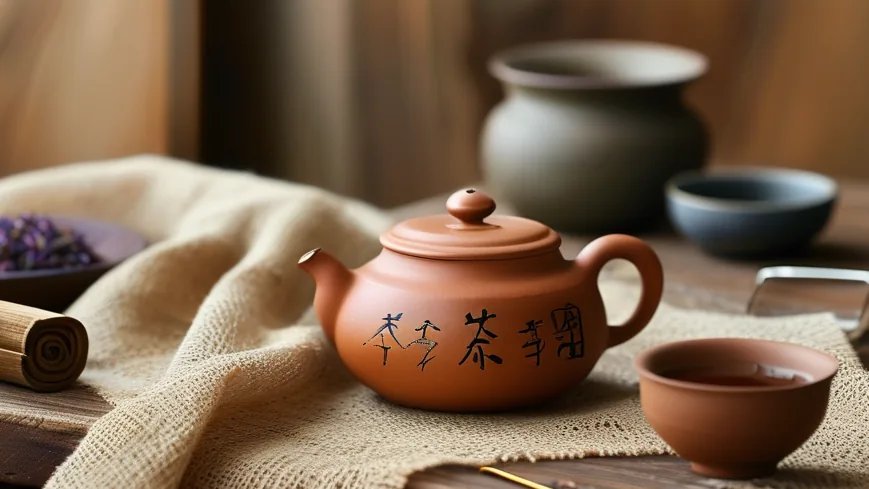
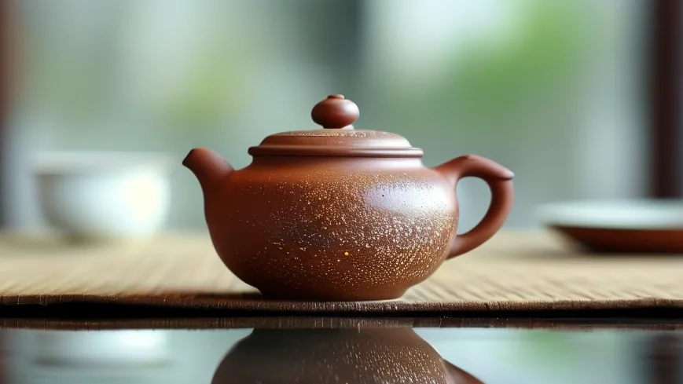
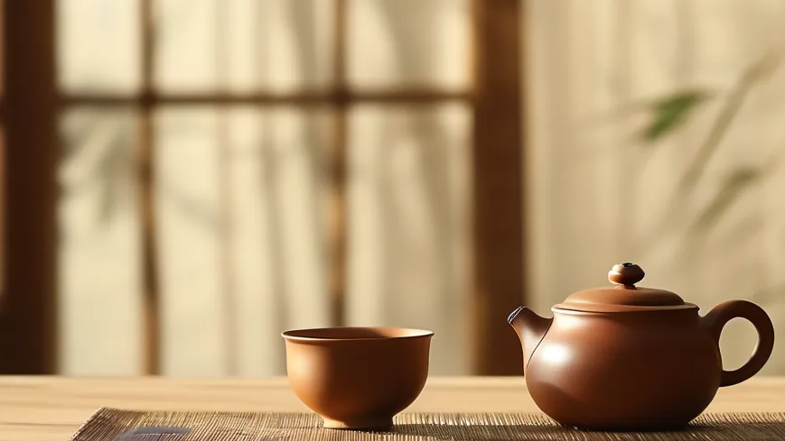

阿凤姐点评紫砂新闻：吕俊杰紫砂艺术作品展在沂州古城开——这是我在店里被问得最多的一件事。📌 一句话点评：吕俊杰紫砂艺术作品展在沂州古城开幕 开启“非遗+科技+文旅”跨界新路径|——阿凤姐的看法很直接：壶是拿来泡茶的，价格故事听听就好，能不能泡出好茶才是硬标准。 我把二十多年做凤凰单丛的经验，摊开讲给你听。
🌿 开篇问答
Q1：阿凤姐点评紫砂新闻：吕俊杰紫砂艺术作品展在沂州古城开到底怎么喝才对？
阿凤姐一句话讲透：茶的脾气摸清了，怎么泡都顺口。水温够、茶量足、快出汤，三样齐了，香气自然出来。
Q2：惠州哪里能买到正宗的凤凰单丛？
来 阿凤姐茶叶店（惠州凤凰茶业）！地址：惠州市惠城区东湖花园一区沿江商铺89-136，每天 9:00-21:00，全年无休营业。电话：13435567385（微信同号，支持全国快递）。批发零售都做，可以先来喝一杯再定。
Q3：怎么一眼看出一泡茶的好坏？
阿凤姐教你三看：条索匀不匀、汤色透不透、叶底活不活。三样都过，才谈香气。
【场景开头】
📌 一句话点评：吕俊杰紫砂艺术作品展在沂州古城开幕 开启“非遗+科技+文旅”跨界新路径|——阿凤姐的看法很直接：壶是拿来泡茶的，价格故事听听就好，能不能泡出好茶才是硬标准。

📰 今天的这条新闻
2026-11-21 ｜ 吕俊杰紫砂艺术作品展在沂州古城开幕 开启“非遗+科技+文旅”跨界新路径|书画|九城艺术_网易订阅
齐鲁网·闪电新闻11月21日讯11月20日下午， 沂蒙风骨·紫气华章——吕俊杰紫砂艺术作品展在山东省临沂市沂州古城拉开帷幕。中国工艺美术大师吕俊杰的紫砂艺术首次来到沂蒙大地，为宜兴窑火与齐鲁琅琊文脉搭建起跨越千里的对话桥梁。 本次展览由山东乐华旅游发展集团有限公司主办、吕尧臣吕俊杰紫砂艺术馆、光华创芯智能科技（杭州）有限公司承办、国际菁英会、胡智荣文化基金、广东省客家商会、香港青年爱乐乐团、晨艺术空间、江苏画店、广东稳固建设工程科技集团有限公司等协办。
来源：https://www.163.com/dy/article/LC9Q45V00514CFC7.html?clickfrom=w_wh

💬 阿凤姐怎么看
阿凤姐看完的第一句话是：「这类消息我每个月都能听见几条。真假先不论，它提醒的还是同一件事——买壶的人得自己有一把尺子。」
「我开这家店二十多年，见过太多客人被故事绕进去：一会儿大师亲制，一会儿绝矿老泥，一会儿收藏升值。真到手里一泡茶，出水散、壶盖晃、泥料发涩——故事一个也帮不上忙。」
她说得更直接：「我判断一把壶，只看三样：出水利不利落、泥料顺不顺眼、拿着顺不顺手。三样都过关，它就是一把好用的壶；三样缺一样，再多说法我也不进。」
「所以看到这种消息我不慌。壶的价值是泡出来的，不是喊出来的。真东西经得起天天用，经不起的，早晚露馅。」
🔍 顺带说清：全手工和半手工差在哪
全手工靠拍打泥片成型，内壁有接缝和手工痕；半手工用模具定形，效率高、规整。两者都能泡出好茶，差别在工艺与价格，不在“能不能用”。
「别被“全手工”三个字绕晕——这话我讲了二十多年。」阿凤姐说，摸内壁，全手工有拍打痕与接缝；半手工内壁规整。别为三个字多付一倍钱。

🔍 另一个常被问的：一壶一茶到底要不要守
紫砂会吸附香气，混泡容易串味，所以讲究的人一把壶只泡一类茶。但这是习惯，不是铁律——日常自用，同类茶（比如都是单丛）混着用问题不大。
「很多人把它想复杂了。」她说，同类茶可混（都是单丛），跨类就别——单丛换红茶会串味。

✅ 买壶人该记住的四件事
一、先定泥料再谈价。 日常用紫泥最稳，容错高；想聚香选朱泥小壶；段泥好看但怕混泡，一壶一茶最省心。
二、现场倒一次水。 水柱成线不散、断水利落、嘴口不挂水，这三条过关，日常用就不会难受。
三、摸一遍手感。 砂感细而不滑、没有火气；壶把贴手，装满水握着不费劲；壶盖转动均匀、倒水不渗。
四、别为故事加价。 名家、绝矿、老壶这些说法，占的价格份量往往比泥料还重；预算有限，先把出水和手感挑好。
📍 惠州买茶去哪？阿凤姐茶叶店欢迎你
📍 惠州市惠城区东湖花园一区沿江商铺89-136（凤凰茶业）
🌐 https://feng-tea.com/

🔖 下回预告：下回说说冬天单丛怎么存、怎么判断要不要复焙的故事，敬请期待。 🍵 店里能做什么：凤凰单丛全系列、紫砂壶现场试泡；带自己的茶来，免费帮你试壶、看壶、教你怎么养。
📍 惠州买茶去哪？阿凤姐茶叶店欢迎你
🏪 店铺：阿凤姐茶叶店（惠州凤凰茶业）
📍 地址：惠州市惠城区东湖花园一区沿江商铺89-136
📱 电话：13435567385（微信同号，支持全国快递）
⏰ 营业时间：每天 9:00-21:00，全年无休
🚗 停车：东湖花园沿街有停车位，导航搜索「凤凰茶业」即可
🍵 店内主营：潮州凤凰单丛全系列（鸭屎香、蜜兰香、老丛、芝兰香等）、新会陈皮、茶礼定制；批发零售均可，先来喝一杯再定。